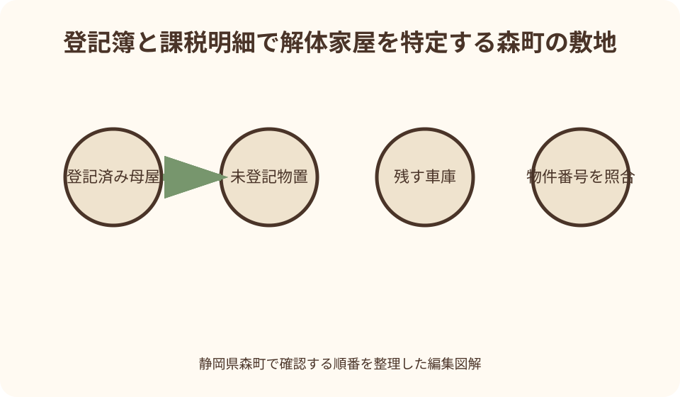
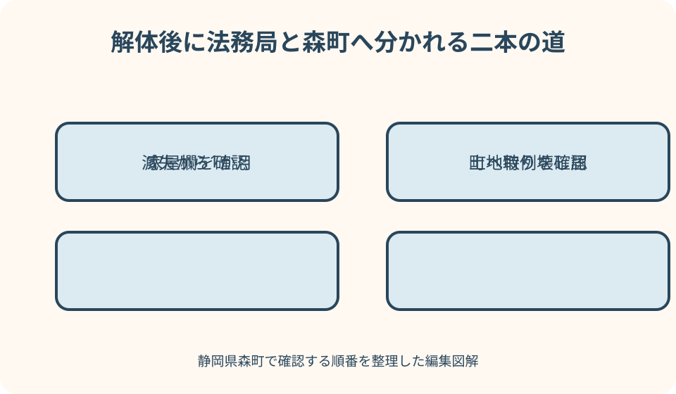

税金・不動産｜最終確認 2026-08-10
静岡県森町で家屋を取り壊した後の手続｜滅失登記・固定資産税・土地特例
家屋を取り壊した後は、法務局で登記記録を閉じる建物滅失登記と、森町が固定資産課税台帳の現況を確認する家屋取り壊し届を分けます。家屋の税が翌年度から外れても、住宅がなくなった土地は住宅用地特例の扱いが変わる可能性があるため、家屋だけを見て税額が下がると決めつけないことが重要です。
家屋解体後の結論を二本の手続で考える
解体工事が終わったら、まず建物が登記されていたかを確認します。登記済みなら法務局へ建物滅失登記を申請する線があり、登記の有無にかかわらず、森町税務課資産税係へ家屋取り壊し届を出して固定資産課税台帳の現況確認を受ける線があります。
法務局の手続は、不動産登記簿に存在する建物の表示を滅失として閉じるものです。森町の届出は、町が現地調査を行い、翌年度の家屋課税や土地の利用状況を判断するためのものです。担当機関と目的が異なるので、片方を済ませれば自動的に全部終わると考えません。
未登記家屋には閉じる登記記録がないため、通常の意味で建物滅失登記を申請する対象ではありません。しかし町の課税台帳に家屋が載っていることはあり、法務局から町へ滅失情報が届く経路も期待できません。未登記だから何もしない、ではなく町への届出を優先します。
この記事の確認日は2026年8月10日です。家屋の構造、附属建物、共有、相続、解体範囲、再建築予定によって必要資料や土地の扱いが変わります。固定資産税額や特例適用を記事だけで確定せず、森町と管轄法務局の双方へ物件を特定して確認してください。
取り壊した家屋を正確に特定する
手続前に、課税明細書、名寄帳、登記事項証明書、解体契約書を並べます。所在地だけでなく、家屋番号、物件番号、種類・用途、構造、床面積を比べます。同じ敷地に母屋、物置、車庫、作業所があると、どの建物を壊したか住所だけでは判別できません。
森町の家屋取り壊し届記入例は、取り壊した日、家屋所在地、用途、構造、屋根、階数、評価面積、家屋物件番号、取り壊し後の跡地利用、再建築予定などを書く形です。課税明細書の記載を先に確認すると、町が調査する家屋を絞りやすくなります。
登記簿の床面積と固定資産課税明細書の評価面積が同じとは限りません。増築部分が未登記、附属建物だけ登記、古い取壊しが未反映などの可能性があります。数字が違うときはどちらかを勝手に修正せず、二つの資料をそれぞれの窓口へ提示します。
一部解体の場合は、建物全部が滅失したのか、床面積や構造が変わったのかを分けます。母屋の一部を減築しただけで建物全体の滅失登記をすることはできません。町の届出も『全棟取り壊し』と書かず、残った部分を配置図と写真で示します。
建物滅失登記は法務局の手続
不動産登記法第57条は、建物が滅失したとき、表題部所有者または所有権の登記名義人が滅失の日から1か月以内に建物滅失登記を申請すると定めています。登記済みの建物を解体した人は、町税の届出期限とは別にこの期間を意識します。
法務局は、所有者個人がマイナンバーカードなどを使ってオンライン申請する方法と、書面申請の方法を案内しています。申請情報作成例には建物の表示、滅失日、原因、申請人などの記載があります。自分の建物に必要な添付情報は最新手引で確認してください。
滅失登記は土地家屋調査士へ依頼できます。法務局は、建物表題登記や土地分筆など不動産の表示に関する登記を代理する専門家として土地家屋調査士を案内しています。相続未登記、所有者不明、建物特定が難しい場合は早めに相談先を検討します。
森町の不動産登記管轄は、静岡地方法務局の最新一覧で確認します。2026年の案内では袋井支局が周智郡森町を管轄しています。古い検索結果や別の登記事務の管轄表を使わず、申請直前に袋井支局ページで所在地、受付、予約の要否を再確認してください。
森町への家屋取り壊し届は課税現況の確認
森町公式は、家屋を取り壊したとき、税務課資産税係へ家屋取り壊し届出書を提出するよう案内しています。提出後、税務課職員が現地調査を行い、滅失を確認できた家屋は翌年度から家屋の固定資産税が課税されなくなる流れです。
届出書はPDF・Wordの様式と電子申請が案内されています。提出方法が複数あっても、現地でどの建物か判別できなければ確認が遅れます。配置図、解体前後の写真、課税明細書上の物件番号を用意すると説明しやすくなります。
登記済み建物の滅失登記を申請した後でも、森町公式が取り壊し届を案内している以上、町側の確認が不要とは自己判断しません。法務局からの通知が課税台帳へ反映される時期と、現地確認の時期がずれる可能性があります。資産税係へ登記申請日も伝えます。
届出を忘れたまま翌年度の納税通知書に家屋が載った場合は、通知書を放置せず資産税係へ連絡します。取り壊し日、解体業者、写真、領収書、滅失登記完了後の証明など、過去の滅失を確認できる資料を聞き、町の調査結果を待ちます。

1月1日の賦課期日で年度を分ける
固定資産税は毎年1月1日の所有・現況を基準に、その年度の課税が行われます。1月2日以降に家屋を取り壊しても、その年度の家屋税が月割で減るとは限りません。森町公式が『翌年度から』家屋課税を外すと案内する点を日程表へ反映します。
例えば12月中に全壊し、町が1月1日の現況で滅失を確認できれば、翌年度の家屋課税へ反映される可能性があります。ただし工事完了日、残存部分、廃材だけの状態、届出・調査の時期によって確認が必要です。年末解体だけで結果を保証しません。
一方、1月中旬の解体なら、1月1日時点で建物が存在していた年度の家屋税は原則として残り、次の1月1日の現況が翌年度へ反映されます。解体費と家屋税、土地税が同じ月に変わると思わず、年度を二列に分けます。
納税通知書を受け取った後に解体した場合も、通知書を捨てません。課税明細書は、取り壊し届へ家屋物件番号や評価面積を書く資料になります。支払方法や納期は通知どおり確認し、解体したことだけを理由に納付を止めないでください。
未登記家屋は町の台帳から確認する
未登記家屋とは、法務局の建物登記簿に記録されていない家屋です。登記がなくても、現況が固定資産税の家屋に当たれば森町の課税台帳へ登録され、納税通知書に載ることがあります。『登記がないから固定資産税もない』とは限りません。
未登記家屋を取り壊した場合、閉じる登記記録はありません。だからこそ町は法務局から滅失情報を受け取れず、所有者の届出と現地調査が重要になります。課税明細書上の物件番号、所在地、用途、構造、面積で対象を特定します。
同じ敷地に登記済み母屋と未登記物置があり、両方を解体した場合は、母屋の滅失登記と、町への二棟分の取り壊し届を分けます。登記申請の建物表示をそのまま町の全家屋一覧だと思わず、課税明細書と突き合わせます。
未登記家屋の所有者が亡くなっている、課税台帳の名義が前所有者のまま、共有者がいる場合は、誰が届出人になるかを資産税係へ相談します。家屋の所有者異動届と取り壊し届のどちらが必要かも、時系列を示して確認してください。
土地の住宅用地特例は別計算
住宅が建つ土地には、要件を満たす範囲で住宅用地の課税標準額を軽減する特例があります。森町公式は、小規模住宅用地と一般住宅用地の区分を案内しています。家屋を取り壊すと、この土地側の特例が翌年度に外れる場合があります。
そのため、家屋の固定資産税がなくなる一方で、土地の固定資産税・都市計画税が上がり、土地と家屋を合わせた総額が想像どおり下がらないことがあります。何倍になると一律に言うことはできません。土地面積、住宅戸数、利用状況、負担調整などを資産税係が判断します。
森町公式は、1月1日時点で新たな住宅が建設されていない、または建築中の土地は住宅用地特例の対象にならないと案内しています。同じ敷地へ建て替える計画があっても、工事中だから当然に特例継続とは考えず、解体・着工・完成の予定を事前に相談します。
敷地に住宅が二棟あり一棟だけを壊す、併用住宅の住宅部分が残る、敷地を分筆する、といった場合は対象面積の判断が複雑です。『住宅が一つ残るから土地全部が同じ』とは限りません。配置図と各棟床面積を示し、特例対象範囲を確認します。
解体前に残す写真と書類
解体前には、道路から見た全景、各棟の位置関係、家屋番号が分かる標識や特徴、母屋と附属建物の接続部を撮影します。写真は美観の記録ではなく、どの建物をいつまでに取り壊したか説明する資料として日付と撮影方向を残します。
工事契約書と見積書では、解体対象棟、残す基礎や塀、樹木、地下埋設物、整地範囲を確認します。契約上の『解体一式』が登記上の一棟と一致するとは限りません。建物ごとの表示を業者と共有してください。
工事完了後は、建物がなくなった全景、残した建物、境界付近、跡地利用を撮影します。解体業者が発行する証明書や印鑑証明書など、滅失登記で必要になり得る資料は、契約時に発行可否と時期を聞きます。
電気、ガス、水道の閉栓資料、廃棄物処理関係の控えも案件別に保管します。これらが必ず滅失登記や取り壊し届の添付物になるとは限りませんが、相続空き家の確認書や売却時の経過説明で必要になる可能性があります。
相続した空き家を解体するとき
登記名義人が亡くなったままの建物を相続人が解体した場合、誰が滅失登記を申請できるか、相続関係を何で示すかを法務局へ確認します。所有権移転登記と滅失登記の順序を自己判断せず、建物が既に存在しない事実と相続経過を伝えます。
町の課税台帳でも、納税義務者が被相続人名義、相続人代表者、共有など複数の形があります。家屋取り壊し届の届出人と、固定資産税通知を受ける人が同じとは限りません。資産税係へ死亡日と相続人の状況を伝えます。
相続した空き家の譲渡所得特例を検討する人は、解体前後の資料をさらに慎重に残します。森町は被相続人居住用家屋等確認書の申請で、解体請負契約書、閉栓資料、解体後から譲渡までの敷地写真、課税台帳写しなどを求める場面を案内しています。
固定資産税の取り壊し届を出したことだけで、所得税の空き家特例が認められるわけではありません。適用要件、譲渡時期、居住者、耐震、敷地利用などは別制度です。売却予定があるなら、解体契約前に税務署や専門家へ相談します。
解体後の納税通知書を照合する
翌年度の納税通知書が届いたら、税額合計だけでなく課税明細書の家屋欄を確認します。取り壊した母屋、物置、車庫などが残っていないか、残した建物まで消えていないかを物件番号で照合します。
土地欄では、地積、評価額、課税標準額、住宅用地の区分が前年からどう変わったかを見ます。家屋税が下がって土地税が上がった場合、単なる計算間違いと決めず、住宅用地特例の変更と負担調整を資産税係へ説明してもらいます。
解体した年の税が残っていることを理由に二重課税と思わないでください。1月1日時点で家屋が存在した年度なら、解体後もその年度分が残る可能性があります。取り壊し日と課税年度を一列にして確認します。
明細に誤りの疑いがあるときは、納期限を無視せず早めに問い合わせます。照会中だから自動で納付が止まるとは限りません。写真、届出控え、滅失登記完了資料、前年と当年の明細を用意し、町の回答を記録します。
よくある取り違えを先に防ぐ
一つ目の取り違えは、解体業者が滅失登記まで自動で行うと思うことです。業者が証明書を出しても、登記申請人や代理資格は別です。契約書に申請代行が含まれるか、担当が土地家屋調査士かを確認します。
二つ目は、固定資産税を払っているから建物は登記済みだと思うことです。未登記でも課税される家屋があります。登記事項証明書と課税明細書を別々に取り、件数と表示を比較してください。
三つ目は、家屋税がなくなれば敷地全体の税も下がると思うことです。住宅用地特例が外れれば土地税が上がる場合があります。解体費、家屋税減、土地税変化を別の欄へ置き、総負担を比較します。
四つ目は、基礎だけ残した、屋根だけ外した状態を当然の滅失と考えることです。建物としての効用を失ったかは事実判断を伴います。工事途中や部分解体なら、完了日と残存状況を写真で示し、法務局と町へ確認します。
良い点
家屋取り壊し届の良い点は、森町職員の現地確認を経て、課税台帳を実際の家屋状況へ合わせられることです。未登記家屋や複数棟がある敷地でも、対象を具体的に示せば翌年度の明細確認につなげられます。
建物滅失登記を行うと、存在しない建物が登記記録に残る状態を解消できます。土地の売却、担保、相続、建て替えの際に、現地と登記が食い違う問題を後回しにしない利点があります。
解体前後の写真と物件一覧を作ることは、税と登記の両方に役立ちます。どの棟を壊し、何を残し、跡地をどう使うかが家族にも伝わり、工事後の境界や残置物を確認しやすくなります。
住宅用地特例まで事前に確認すれば、家屋税だけを見た資金計画を避けられます。解体、建て替え、更地保有、売却の各案について、翌年度以降の土地と家屋の扱いを資産税係へ相談する材料になります。
注文したい点
注文したい点は、登記と町税の届出が似た名前で、別機関の別手続だと初見では分かりにくいことです。解体業者から『届出を出します』と言われても、法務局の滅失登記か、町の取り壊し届か、単なる工事届かを文書名で確認する必要があります。
1月1日の基準も、解体した翌月から税が下がるという日常感覚とずれます。年末工事では完了日と町の現況確認が重要になり、年始工事ではその年度の家屋税が残り得ます。工事契約時に税年度の説明があると判断しやすくなります。
住宅用地特例が外れた後の土地税は、単純な倍率だけでは説明できません。町公式には特例率がありますが、実際の税額は地積、評価、負担調整、都市計画税などが関係します。解体前に概算相談の可否を案内してもらえると安心です。
未登記家屋では、家屋番号がなく、家族が母屋と離れを違う呼び名で覚えていることがあります。課税明細書の物件番号と地図上の棟を結ぶ配置図を町と所有者が共有できれば、誤って別棟を削除する不安を減らせます。
代案・結論
登記済みか分からない場合は、古い権利証だけで判断せず、登記事項証明書や登記情報を確認します。町の課税明細書に家屋があることは登記済みの証明ではありません。分からなければ袋井支局と資産税係へ同じ所在地を伝えます。
解体日から1か月を過ぎてしまった場合も、放置を続ける代案はありません。遅れた事情と解体資料を整理し、法務局または土地家屋調査士へ現在の申請方法を確認します。町への届出も未提出なら同時に連絡します。
取り壊し届の物件番号が分からない場合は、空欄を推測で埋めず、納税通知書、名寄帳、所在地、構造、面積、写真を資産税係へ示して特定してもらいます。複数棟なら配置図に番号を振ります。
結論として、①登記簿と課税明細書で建物を特定、②登記済みなら1か月以内の滅失登記、③森町へ取り壊し届、④翌年度の家屋欄、⑤土地の住宅用地特例を順に確認します。この五段階を一枚に残せば、税と登記の抜けを防げます。

家族に残す解体記録
解体記録の表紙には、土地の所在、地番、家屋所在地、家屋番号、町の物件番号を別々に書きます。住居表示の住所だけでは登記や課税の建物を特定できないことがあります。
次に、所有者、登記名義人、納税義務者、解体契約者を分けます。相続前の実家では四者が一致しない場合があります。誰がどの手続を行ったか、委任や相続関係資料をどこへ出したかを記録します。
工事欄には契約日、着工日、全棟の滅失日、業者の証明書発行日、写真フォルダ名を書きます。登記欄には申請日と完了日、町税欄には取り壊し届提出日と現地確認結果を置きます。
翌年度の納税通知書が届いたら、家屋が外れたこと、残存家屋、土地の特例区分、前年との差を追記します。税額だけでなく、なぜ変わったかという町の回答も残すと、将来の売却や相続で説明できます。
大石の視点
私は、空き家解体では工事費だけで判断せず、登記、固定資産税、土地利用、境界、接道を一つの工程表へ置くべきだと考えます。建物がなくなってから、敷地へ再建築できるか、売れるかを初めて調べるのでは遅い場合があります。
解体前の現地確認では、隣地境界標、越境物、共有塀、給排水、井戸、擁壁、進入路を写真に残します。建物を壊すと目印がなくなり、家族の記憶だけでは境界や配管位置を説明しにくくなるためです。
住宅用地特例が外れる可能性は、空き家を残す理由に直結させるのではなく、安全、維持費、再利用、売却時期と合わせて比較します。危険な建物を税だけのために残す判断は避け、町や専門家から土地税の見通しを得ます。
まだ売ると決めていない実家でも、登記と課税台帳をそろえ、解体前後の資料を残す価値があります。更地で保有する、建て替える、貸す、売るのどの選択でも、建物がいつ、どの範囲でなくなったかは共通の基礎情報になります。
森町と法務局へ聞く質問
森町には、『課税明細書のどの家屋が今回の解体対象ですか』『取り壊し届の提出方法と現地確認はどうなりますか』と聞きます。未登記棟や一部解体があれば最初に伝えます。
土地については、『次の1月1日時点で住宅がない場合、住宅用地特例の対象範囲はどう変わりますか』と尋ねます。建て替え予定、残る住宅、敷地分筆、併用住宅の有無を示し、税額保証ではなく判断材料を確認します。
法務局には、『この登記記録の建物は全部滅失していますか』『申請人と必要な添付情報は何ですか』『森町所在の申請先はどこですか』と質問します。登記事項証明書を手元に置きます。
専門家へ依頼する場合は、報酬だけでなく、現地調査、解体業者証明の取得、相続関係確認、申請後の完了証受領をどこまで含むか確認します。町への取り壊し届が業務範囲に入るかも別に聞きます。
まとめ
森町の家屋を解体したら、登記済み建物の建物滅失登記と、森町への家屋取り壊し届を分けます。不動産登記法では滅失から1か月以内の申請が定められ、町は届出後の現地確認をもとに翌年度の家屋課税へ反映します。
未登記家屋には閉じる登記記録がありませんが、課税台帳には載っている場合があります。課税明細書の物件番号、用途、構造、面積、配置図で対象を特定し、町へ忘れず届けます。
固定資産税は1月1日の現況が基準です。年度途中に解体しても、その年度の家屋税が月割で返るとは限りません。翌年度は家屋税が外れる一方、住宅用地特例が外れて土地税が上がる場合があります。
今日の一歩は、登記事項証明書と課税明細書を並べ、敷地内の全棟へ番号を振ることです。その一覧をもとに袋井支局、森町資産税係、必要なら土地家屋調査士へ確認すれば、登記・税・土地の三つを抜けなく整えられます。
公式情報・確認先
掲載内容は次の一次情報を基礎に整理しました。営業、料金、催し、交通は変わるため、出発前または手続き前にリンク先で最新情報を確認してください。
- よくあるご質問〈家屋について〉（静岡県森町、2026-08-10確認）
- 申請書様式〈固定資産税関係〉（静岡県森町、2026-08-10確認）
- 住宅用地に対する特例について（静岡県森町、2026-08-10確認）
- よくあるご質問〈土地について〉（静岡県森町、2026-08-10確認）
- 不動産登記法（建物の滅失の登記の申請）（e-Gov法令検索、2026-08-10確認）
- 建物を取り壊した（建物滅失の登記をオンライン申請したい方）（法務局、2026-08-10確認）
- 静岡地方法務局 袋井支局（静岡地方法務局、2026-08-10確認）